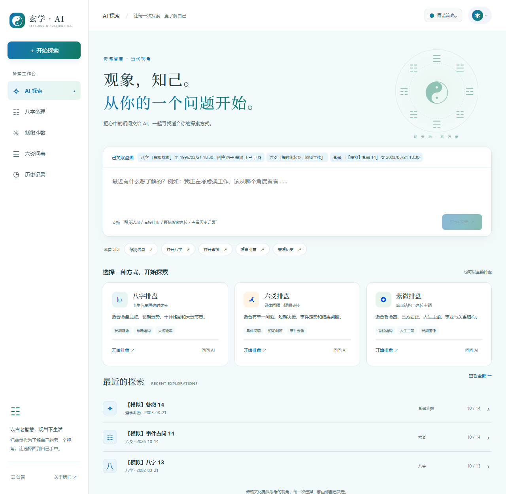

玄学 · AI / 正式 Vue 界面
从草稿，到可以操作的工作台。
已将确认的渐变设计应用到原 Vue 3 / uni-app 页面，并沿用原有排盘算法、Pinia 状态、API 客户端和路由。默认青蓝渐变，另有琥珀与青翠两种配色，不使用紫色主题。
测试日期：2026-10-12 · 浏览器：Codex 内置 Chromium · 桌面 1280px、平板 834px、手机 390px、窄屏 320px
本地账号 demo@example.test · 密码 Demo123!。服务重启后恢复 42 条初始记录，需要重新登录。
122 / 122自动化回归通过，含公告焦点与错误显示回归
类型检查通过vue-tsc --noEmit，退出码 0
H5 构建通过正式构建完成，未注入模拟 API 配置
最新更新：公告与单一侧栏导航
已移除底部导航及其占位。大于 1024px 时侧栏常驻；手机和平板通过左上角菜单展开侧栏，内容使用完整宽度。侧栏可独立滚动，横屏也能访问公告和历史记录。
公告采用自适应弹窗，遮罩覆盖侧栏与顶栏，正文独立滚动，标题和关闭按钮保持可见。支持 Esc、焦点限制及关闭后的焦点和滚动恢复。加载、空公告和错误提示分别显示。
浏览器实测 320×640、390×844、834×1112、1024×600、844×390、1280×720。三条长公告通过仅限公告接口的临时测试响应验证，正文可滚动到末尾且背景不移动；测试后已清除拦截并恢复默认模拟公告。
首页效果

浏览器交互覆盖
下表的“浏览器通过”表示实际点击、输入或键盘操作后核对页面状态。模拟账号与回复通过正式前端请求链路返回；命盘由原算法现场计算。
异常与等待状态
桌面与手机截图
以下为上一轮功能接入时的截图；本轮公告与导航显示以上方“最新更新”为准。
其他截图：834px 首页 · 320px 八字表单 · 320px 六爻表单 · 桌面紫微 · 桌面六爻 · 桌面对话 · 桌面历史
验证命令与范围
cd frontend-docker
node --test tests/*.test.cjs # 122 通过，0 失败
node node_modules/vue-tsc/bin/vue-tsc.js --noEmit # 退出码 0
$env:VITE_BUILD_PROGRESS = 'false'
node node_modules/@dcloudio/vite-plugin-uni/bin/uni.js build -p h5
# DONE Build complete.
git diff --check # 通过
node scripts/ui-simulation/run.cjs # 重启模拟预览
当前 node_modules 是共享依赖目录的 junction。构建关闭的仅是会向依赖目录写缓存的进度条插件；没有改变正式业务配置。构建保留 Browserslist 数据较旧及既有静态/动态导入混用的非阻塞提示。
边界本次确认的是正式前端在模拟服务下的显示和交互。账号、历史、额度与 AI 回复均为内存夹具，没有连接生产数据库或真实模型，不代表真实模型质量、生产后端验收或不同账号的数据隔离。原生文件选择弹窗未完成端到端验证；也未执行 App / 小程序原生平台验收。